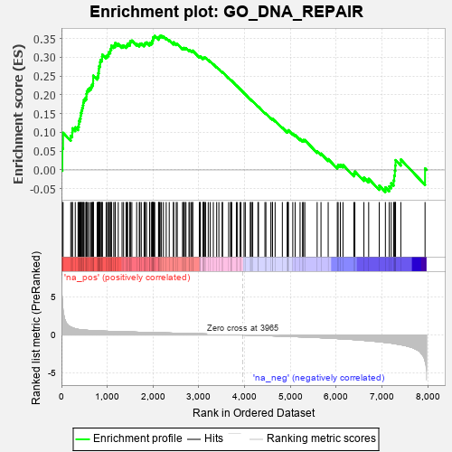
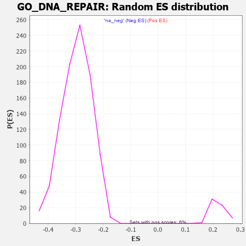

| | | Dataset | 7d |
| Phenotype | NoPhenotypeAvailable |
| Upregulated in class | na_pos |
| GeneSet | GO_DNA_REPAIR |
| Enrichment Score (ES) | 0.3571758 |
| Normalized Enrichment Score (NES) | 1.6264379 |
| Nominal p-value | 0.0 |
| FDR q-value | 0.21542919 |
| FWER p-Value | 1.0 |
Table: GSEA Results Summary

Fig 1: Enrichment plot: GO_DNA_REPAIR
Profile of the Running ES Score & Positions of GeneSet Members on the Rank Ordered List
| PROBE | GENE SYMBOL | GENE_TITLE | RANK IN GENE LIST | RANK METRIC SCORE | RUNNING ES | CORE ENRICHMENT | | 1 | H2AX | | | 20 | 4.738 | 0.0578 | Yes |
| 2 | SPO11 | | | 35 | 3.371 | 0.0990 | Yes |
| 3 | SWI5 | | | 203 | 1.045 | 0.0909 | Yes |
| 4 | SFR1 | | | 235 | 0.969 | 0.0992 | Yes |
| 5 | CDC45 | | | 239 | 0.950 | 0.1110 | Yes |
| 6 | CCNH | | | 301 | 0.817 | 0.1136 | Yes |
| 7 | HUS1 | | | 362 | 0.735 | 0.1152 | Yes |
| 8 | CLSPN | | | 379 | 0.719 | 0.1223 | Yes |
| 9 | AXIN2 | | | 383 | 0.713 | 0.1310 | Yes |
| 10 | NBN | | | 405 | 0.696 | 0.1372 | Yes |
| 11 | RAD9A | | | 418 | 0.681 | 0.1444 | Yes |
| 12 | MLH1 | | | 423 | 0.679 | 0.1525 | Yes |
| 13 | CENPS | | | 439 | 0.666 | 0.1591 | Yes |
| 14 | ERCC1 | | | 453 | 0.660 | 0.1658 | Yes |
| 15 | WRN | | | 469 | 0.649 | 0.1722 | Yes |
| 16 | FAN1 | | | 477 | 0.645 | 0.1795 | Yes |
| 17 | RFC2 | | | 488 | 0.635 | 0.1863 | Yes |
| 18 | MGME1 | | | 515 | 0.625 | 0.1909 | Yes |
| 19 | ASCC2 | | | 545 | 0.614 | 0.1950 | Yes |
| 20 | MCM2 | | | 546 | 0.614 | 0.2028 | Yes |
| 21 | MSH5 | | | 554 | 0.612 | 0.2097 | Yes |
| 22 | APEX1 | | | 577 | 0.604 | 0.2146 | Yes |
| 23 | MCM7 | | | 612 | 0.591 | 0.2178 | Yes |
| 24 | MCM8 | | | 646 | 0.578 | 0.2209 | Yes |
| 25 | RFC3 | | | 663 | 0.571 | 0.2262 | Yes |
| 26 | CDK7 | | | 686 | 0.564 | 0.2305 | Yes |
| 27 | ATP23 | | | 691 | 0.562 | 0.2372 | Yes |
| 28 | MRE11 | | | 693 | 0.560 | 0.2442 | Yes |
| 29 | XRCC6 | | | 694 | 0.560 | 0.2513 | Yes |
| 30 | RAD21 | | | 779 | 0.538 | 0.2474 | Yes |
| 31 | EXD2 | | | 801 | 0.532 | 0.2515 | Yes |
| 32 | BLM | | | 804 | 0.531 | 0.2580 | Yes |
| 33 | RFC4 | | | 815 | 0.528 | 0.2634 | Yes |
| 34 | RPA1 | | | 817 | 0.527 | 0.2700 | Yes |
| 35 | TCEA1 | | | 821 | 0.526 | 0.2763 | Yes |
| 36 | PPIE | | | 842 | 0.521 | 0.2804 | Yes |
| 37 | RFWD3 | | | 843 | 0.521 | 0.2871 | Yes |
| 38 | RPA2 | | | 851 | 0.519 | 0.2928 | Yes |
| 39 | PARG | | | 884 | 0.509 | 0.2952 | Yes |
| 40 | RMI1 | | | 886 | 0.509 | 0.3015 | Yes |
| 41 | HMGB2 | | | 892 | 0.507 | 0.3073 | Yes |
| 42 | WDR48 | | | 975 | 0.489 | 0.3031 | Yes |
| 43 | MEN1 | | | 1003 | 0.483 | 0.3058 | Yes |
| 44 | REC8 | | | 1028 | 0.478 | 0.3088 | Yes |
| 45 | ISY1 | | | 1036 | 0.476 | 0.3139 | Yes |
| 46 | WDR70 | | | 1066 | 0.470 | 0.3162 | Yes |
| 47 | XPA | | | 1070 | 0.469 | 0.3218 | Yes |
| 48 | DEK | | | 1088 | 0.466 | 0.3256 | Yes |
| 49 | RAD51 | | | 1090 | 0.466 | 0.3314 | Yes |
| 50 | MCM3 | | | 1142 | 0.456 | 0.3306 | Yes |
| 51 | WDHD1 | | | 1172 | 0.451 | 0.3326 | Yes |
| 52 | ERCC3 | | | 1173 | 0.451 | 0.3384 | Yes |
| 53 | KAT7 | | | 1240 | 0.440 | 0.3355 | Yes |
| 54 | SSRP1 | | | 1323 | 0.424 | 0.3304 | Yes |
| 55 | PMS1 | | | 1356 | 0.418 | 0.3317 | Yes |
| 56 | APEX2 | | | 1410 | 0.408 | 0.3301 | Yes |
| 57 | PDS5B | | | 1432 | 0.403 | 0.3325 | Yes |
| 58 | RBX1 | | | 1445 | 0.401 | 0.3361 | Yes |
| 59 | ENDOV | | | 1491 | 0.391 | 0.3353 | Yes |
| 60 | UVSSA | | | 1496 | 0.391 | 0.3398 | Yes |
| 61 | MCM6 | | | 1506 | 0.389 | 0.3436 | Yes |
| 62 | FANCI | | | 1537 | 0.385 | 0.3446 | Yes |
| 63 | DDB1 | | | 1642 | 0.366 | 0.3360 | Yes |
| 64 | ERCC8 | | | 1699 | 0.357 | 0.3333 | Yes |
| 65 | ERCC2 | | | 1712 | 0.354 | 0.3363 | Yes |
| 66 | MRNIP | | | 1743 | 0.346 | 0.3369 | Yes |
| 67 | RAD17 | | | 1804 | 0.336 | 0.3335 | Yes |
| 68 | MSH2 | | | 1819 | 0.334 | 0.3359 | Yes |
| 69 | UVRAG | | | 1831 | 0.332 | 0.3387 | Yes |
| 70 | OTUB1 | | | 1857 | 0.326 | 0.3397 | Yes |
| 71 | MMS19 | | | 1924 | 0.317 | 0.3353 | Yes |
| 72 | EMSY | | | 1929 | 0.316 | 0.3388 | Yes |
| 73 | NFRKB | | | 1968 | 0.310 | 0.3379 | Yes |
| 74 | HELQ | | | 1982 | 0.307 | 0.3401 | Yes |
| 75 | POLH | | | 1983 | 0.307 | 0.3440 | Yes |
| 76 | MCRS1 | | | 1996 | 0.305 | 0.3464 | Yes |
| 77 | ASCC3 | | | 2000 | 0.305 | 0.3499 | Yes |
| 78 | EXO1 | | | 2002 | 0.304 | 0.3536 | Yes |
| 79 | DMAP1 | | | 2025 | 0.301 | 0.3546 | Yes |
| 80 | HMCES | | | 2036 | 0.300 | 0.3572 | Yes |
| 81 | INO80 | | | 2120 | 0.288 | 0.3502 | No |
| 82 | TONSL | | | 2121 | 0.288 | 0.3539 | No |
| 83 | PSME4 | | | 2143 | 0.285 | 0.3548 | No |
| 84 | DTL | | | 2154 | 0.284 | 0.3572 | No |
| 85 | UBE2A | | | 2183 | 0.278 | 0.3571 | No |
| 86 | CDK2 | | | 2226 | 0.272 | 0.3552 | No |
| 87 | XRCC1 | | | 2287 | 0.262 | 0.3508 | No |
| 88 | CDC5L | | | 2353 | 0.253 | 0.3457 | No |
| 89 | FEN1 | | | 2446 | 0.237 | 0.3369 | No |
| 90 | KDM1A | | | 2447 | 0.237 | 0.3400 | No |
| 91 | HUWE1 | | | 2506 | 0.225 | 0.3354 | No |
| 92 | RAD1 | | | 2528 | 0.223 | 0.3355 | No |
| 93 | KAT5 | | | 2644 | 0.206 | 0.3234 | No |
| 94 | ARID2 | | | 2664 | 0.204 | 0.3236 | No |
| 95 | MUS81 | | | 2673 | 0.202 | 0.3251 | No |
| 96 | MARF1 | | | 2704 | 0.198 | 0.3238 | No |
| 97 | DDX1 | | | 2718 | 0.196 | 0.3247 | No |
| 98 | NSD2 | | | 2784 | 0.185 | 0.3187 | No |
| 99 | ATR | | | 2800 | 0.183 | 0.3191 | No |
| 100 | EEPD1 | | | 2835 | 0.178 | 0.3170 | No |
| 101 | AQR | | | 2863 | 0.173 | 0.3157 | No |
| 102 | UCHL5 | | | 2864 | 0.172 | 0.3179 | No |
| 103 | RTEL1 | | | 3010 | 0.148 | 0.3012 | No |
| 104 | BRCA2 | | | 3024 | 0.146 | 0.3014 | No |
| 105 | PIAS4 | | | 3034 | 0.145 | 0.3021 | No |
| 106 | TIGAR | | | 3091 | 0.138 | 0.2967 | No |
| 107 | CUL4A | | | 3097 | 0.137 | 0.2978 | No |
| 108 | REV1 | | | 3104 | 0.136 | 0.2987 | No |
| 109 | MDC1 | | | 3113 | 0.135 | 0.2994 | No |
| 110 | OGG1 | | | 3135 | 0.132 | 0.2984 | No |
| 111 | ASCC1 | | | 3146 | 0.131 | 0.2988 | No |
| 112 | FZR1 | | | 3205 | 0.122 | 0.2929 | No |
| 113 | EME1 | | | 3246 | 0.114 | 0.2892 | No |
| 114 | PARP2 | | | 3316 | 0.103 | 0.2817 | No |
| 115 | RFC5 | | | 3389 | 0.091 | 0.2736 | No |
| 116 | RFC1 | | | 3437 | 0.085 | 0.2687 | No |
| 117 | XPC | | | 3509 | 0.076 | 0.2606 | No |
| 118 | UBR5 | | | 3518 | 0.074 | 0.2605 | No |
| 119 | SPRTN | | | 3651 | 0.051 | 0.2442 | No |
| 120 | DHX9 | | | 3693 | 0.044 | 0.2395 | No |
| 121 | SMC3 | | | 3701 | 0.042 | 0.2392 | No |
| 122 | HSF1 | | | 3718 | 0.039 | 0.2376 | No |
| 123 | CHD1L | | | 3819 | 0.024 | 0.2251 | No |
| 124 | SMG1 | | | 3843 | 0.021 | 0.2224 | No |
| 125 | NIPBL | | | 3900 | 0.010 | 0.2154 | No |
| 126 | HINFP | | | 3920 | 0.006 | 0.2130 | No |
| 127 | EYA1 | | | 3987 | -0.006 | 0.2046 | No |
| 128 | PARP1 | | | 4014 | -0.010 | 0.2014 | No |
| 129 | ABL1 | | | 4125 | -0.027 | 0.1876 | No |
| 130 | MSH6 | | | 4129 | -0.028 | 0.1876 | No |
| 131 | MCM9 | | | 4163 | -0.036 | 0.1838 | No |
| 132 | MSH4 | | | 4176 | -0.038 | 0.1828 | No |
| 133 | TDG | | | 4290 | -0.058 | 0.1690 | No |
| 134 | HERC2 | | | 4302 | -0.060 | 0.1684 | No |
| 135 | SETD2 | | | 4443 | -0.084 | 0.1515 | No |
| 136 | ERCC6 | | | 4464 | -0.087 | 0.1501 | No |
| 137 | PNKP | | | 4572 | -0.111 | 0.1378 | No |
| 138 | ESCO2 | | | 4605 | -0.119 | 0.1352 | No |
| 139 | SMC1A | | | 4609 | -0.120 | 0.1363 | No |
| 140 | TTC5 | | | 4665 | -0.131 | 0.1309 | No |
| 141 | TAOK3 | | | 4823 | -0.162 | 0.1129 | No |
| 142 | ATRX | | | 4929 | -0.184 | 0.1017 | No |
| 143 | EP300 | | | 4941 | -0.186 | 0.1027 | No |
| 144 | XRCC5 | | | 4946 | -0.187 | 0.1046 | No |
| 145 | PRKDC | | | 4955 | -0.189 | 0.1060 | No |
| 146 | REV3L | | | 5051 | -0.209 | 0.0964 | No |
| 147 | DDX11 | | | 5102 | -0.225 | 0.0929 | No |
| 148 | ATM | | | 5210 | -0.249 | 0.0824 | No |
| 149 | CDK1 | | | 5264 | -0.262 | 0.0789 | No |
| 150 | ERCC5 | | | 5284 | -0.268 | 0.0799 | No |
| 151 | RAD50 | | | 5314 | -0.276 | 0.0797 | No |
| 152 | PMS2 | | | 5583 | -0.340 | 0.0496 | No |
| 153 | MEIOB | | | 5667 | -0.366 | 0.0437 | No |
| 154 | FANCM | | | 5824 | -0.413 | 0.0289 | No |
| 155 | JMY | | | 6023 | -0.479 | 0.0096 | No |
| 156 | POLK | | | 6041 | -0.486 | 0.0136 | No |
| 157 | UBB | | | 6090 | -0.503 | 0.0139 | No |
| 158 | RNF8 | | | 6147 | -0.518 | 0.0133 | No |
| 159 | ISG15 | | | 6385 | -0.608 | -0.0093 | No |
| 160 | UBE2N | | | 6407 | -0.621 | -0.0041 | No |
| 161 | PIF1 | | | 6604 | -0.713 | -0.0202 | No |
| 162 | EGFR | | | 6708 | -0.765 | -0.0236 | No |
| 163 | DOT1L | | | 6939 | -0.897 | -0.0417 | No |
| 164 | CETN1 | | | 7073 | -0.978 | -0.0463 | No |
| 165 | UFD1 | | | 7157 | -1.040 | -0.0437 | No |
| 166 | CETN2 | | | 7200 | -1.070 | -0.0354 | No |
| 167 | REXO4 | | | 7253 | -1.126 | -0.0277 | No |
| 168 | CDK9 | | | 7266 | -1.138 | -0.0148 | No |
| 169 | CIB1 | | | 7280 | -1.152 | -0.0018 | No |
| 170 | PARP3 | | | 7289 | -1.158 | 0.0120 | No |
| 171 | SYCP1 | | | 7295 | -1.167 | 0.0262 | No |
| 172 | UBC | | | 7410 | -1.274 | 0.0278 | No |
| 173 | WDR33 | | | 7939 | -3.452 | 0.0041 | No |
Table: GSEA details [plain text format]

Fig 2: GO_DNA_REPAIR: Random ES distribution
Gene set null distribution of ES for GO_DNA_REPAIR